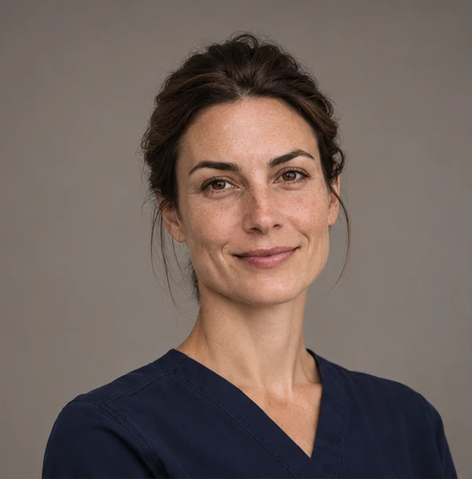

Демонстрационный профиль · имя и портрет вымышлены
Анна Миронова
Стоматолог-терапевт
Лечение кариеса и восстановление зубов. Объясняет план лечения и отвечает на вопросы пациента.

Демонстрационный профиль · имя и портрет вымышлены
Стоматолог-терапевт
Лечение кариеса и восстановление зубов. Объясняет план лечения и отвечает на вопросы пациента.